v45 表の形の整え方を分かりやすく
先生の声：表の列幅に対する調整・設定のボタンが使いにくかったり、見にくかったり、わかりにくかったりします
。使うのは、Word に慣れていない学生です。
いまの画面の分かりにくい所を ①〜⑦ にまとめ、直し方を3つの案（A・B・C）にしました。できることは、どの案も今と同じです。
画面は本物のツールに、案の部分だけ書き足して写したものです（絵を押すと大きく見られます）。見本の素材表には、説明の列「特徴」を足しています。
いまの画面分かりにくい所に番号

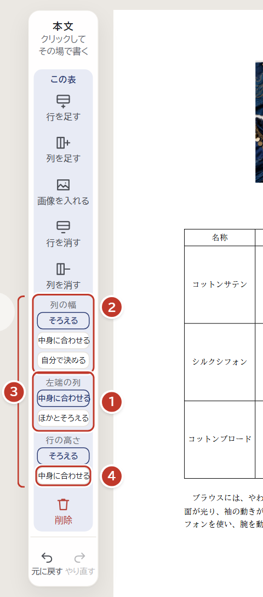
パソコン 1366×768：列の幅・左端の列・行の高さの切り替えが縦に7つ
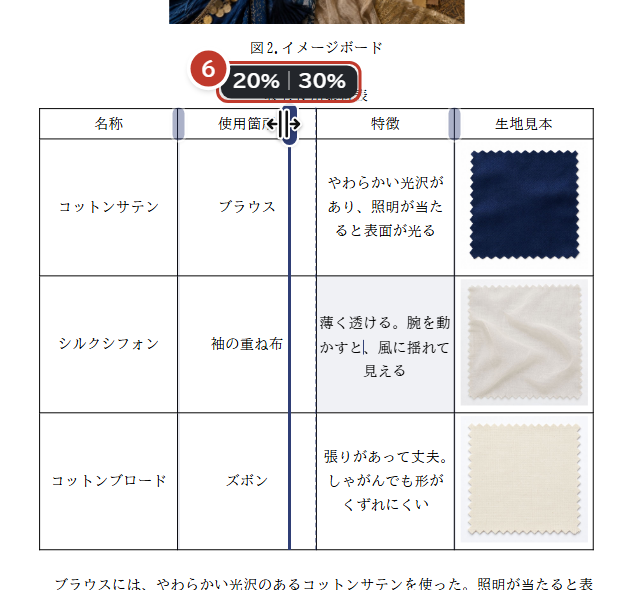
自分で決める：線を動かすと、数の札「20%｜30%」
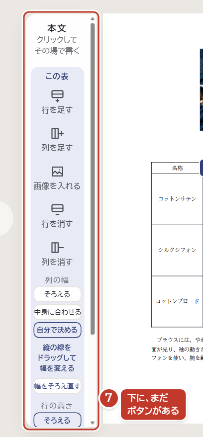
画面の低いパソコン（1280×720 のブラウザの中）
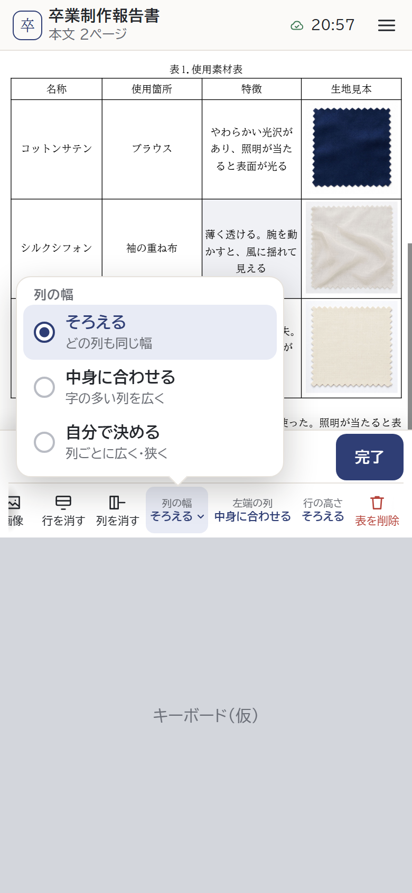
スマホ：列の幅の小さな窓
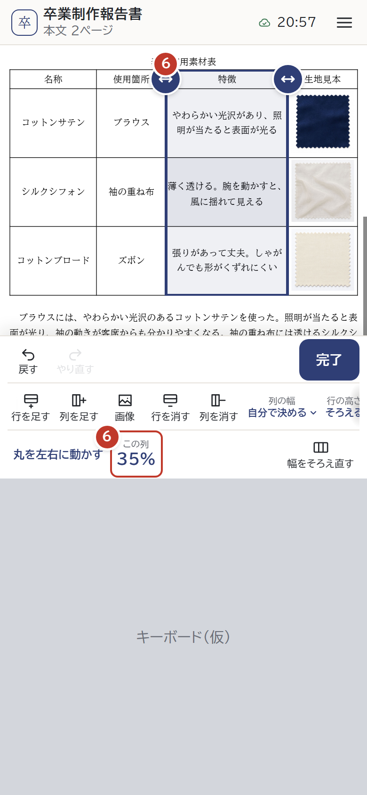
自分で決める：丸いつまみと「この列 35%」
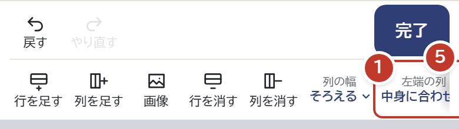
道具の段：右に続きがある
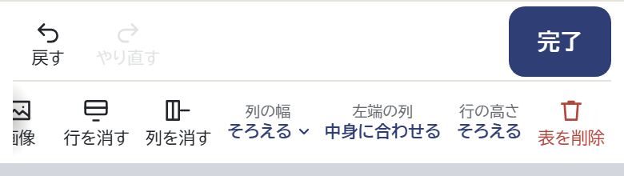
横にずらすと：「行の高さ」「表を削除」が出てくる1言葉が難しい
「中身に合わせる」が3か所にあり、意味がそれぞれちがう。「左端の列」「ほかとそろえる」も、何のことか分かりにくい。
「中身に合わせる」が3か所にあり、意味がそれぞれちがう。「左端の列」「ほかとそろえる」も、何のことか分かりにくい。
2押す前に、どうなるか分からない
名前だけで、絵も見本もない。説明は、マウスを乗せたときの小さな字だけ。
名前だけで、絵も見本もない。説明は、マウスを乗せたときの小さな字だけ。
33つの切り替えに分かれている
列の幅・左端の列・行の高さのボタンが縦に7つ。どれとどれが組か分かりにくく、「左端の列」は出たり消えたりする。
列の幅・左端の列・行の高さのボタンが縦に7つ。どれとどれが組か分かりにくく、「左端の列」は出たり消えたりする。
4ボタンが小さい
高さ 21px・字 9.5px（パソコン）。ほかの道具の字（10.5px）より小さい。
高さ 21px・字 9.5px（パソコン）。ほかの道具の字（10.5px）より小さい。
5スマホの道具の段が横に動く
中身 495px に、見える所 374px。「行の高さ」「表を削除」は、横にずらさないと見えない。
中身 495px に、見える所 374px。「行の高さ」「表を削除」は、横にずらさないと見えない。
6割合の数
線を動かすと「20%｜30%」、スマホは「この列 35%」。数より「広くなる・せまくなる」のほうが分かる。丸いつまみは見出しの字に重なる。
線を動かすと「20%｜30%」、スマホは「この列 35%」。数より「広くなる・せまくなる」のほうが分かる。丸いつまみは見出しの字に重なる。
7画面の低いパソコンで、左の道具がはみ出す
道具の中身 697px。1280×720 では見える所 661px、そのブラウザの中（1280×586）では 554px、1366×768 のブラウザの中でも 602px。「削除」「元に戻す」が隠れる。
道具の中身 697px。1280×720 では見える所 661px、そのブラウザの中（1280×586）では 554px、1366×768 のブラウザの中でも 602px。「削除」「元に戻す」が隠れる。
✓直す方向
言葉は「押すとどうなるか」で書き、絵を付ける。設定は1か所にまとめる。スマホは横に動かさない。
言葉は「押すとどうなるか」で書き、絵を付ける。設定は1か所にまとめる。スマホは横に動かさない。
どの案でも同じ（決まり）
- 言葉は「押すとどうなるか」で書きます：列の幅をそろえる・字の多い列を広く・自分で決める・項目の列（左端）は字に合わせる・行の高さをそろえる（見出しの行は別）。「中身に合わせる」「左端の列」「ほかとそろえる」は使いません。
- 選ぶものには、どれも小さな表の絵。絵の表の高さも変わります（字の多い列を広くすると、表が短くなる）。
- 「項目の列（左端）」は、列の幅をそろえるときだけ使えます。ほかのときは消さずに、うすくして 「列の幅をそろえる」のときだけ と出します。
- パソコンの自分で決める：縦の線に、はっきりしたつまみ。動かしている間は ◀ せまくなる・広くなる ▶。数（%）は出しません（下の②）。
- スマホ：道具の段は横に動かしません。ボタンはどれも 44px 以上。設定は、下から出る欄で絵を見て選びます。
- できること（3つの列の幅・項目の列・行の高さ・行と列を足す／消す・マスの画像・表の削除）と、紙面（PDF）の組み方は今と同じです。
① 案A 「表の形を整える」の窓


画面の低いパソコン（いちばん長い窓：自分で決める）

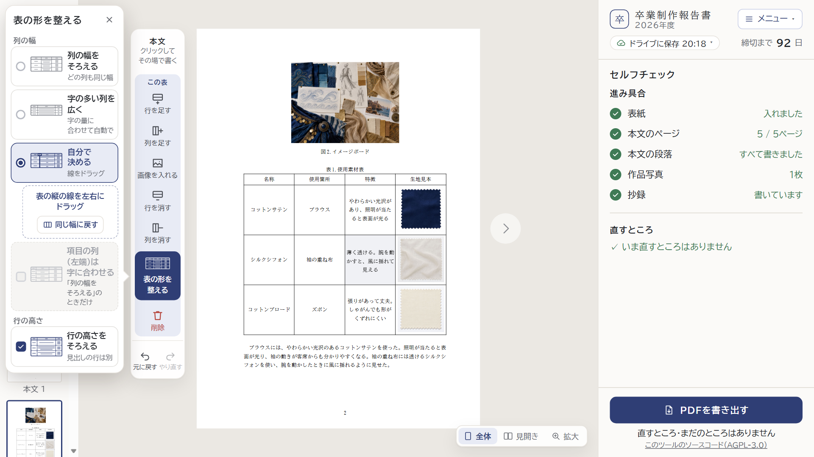
- 1280×720：左の道具 550px（いまは 697px）。動かさずに全部見える
- 窓は 8〜588px（画面 720px）

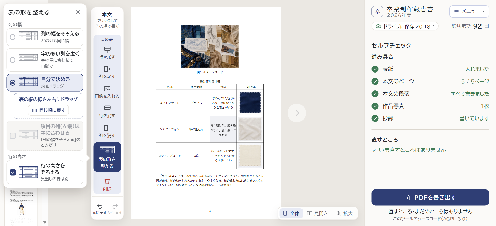
- 1280×720 のブラウザの中（1280×586）：左の道具の下の端 570px・窓は 8〜488px（画面 586px）
- 1366×768 のブラウザの中（1366×634）：窓は 29〜478px。どちらも入る
スマホ 390×844（仮のキーボード）


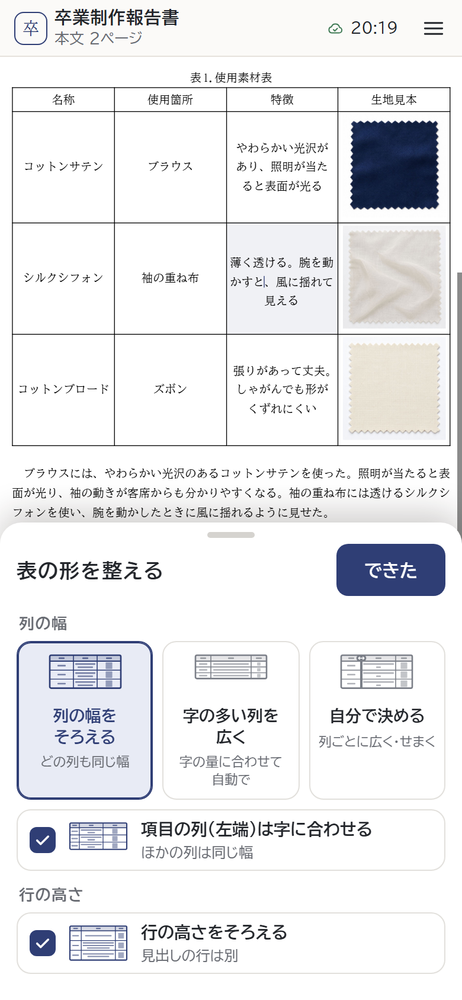
下から出る欄：絵を見て選ぶ
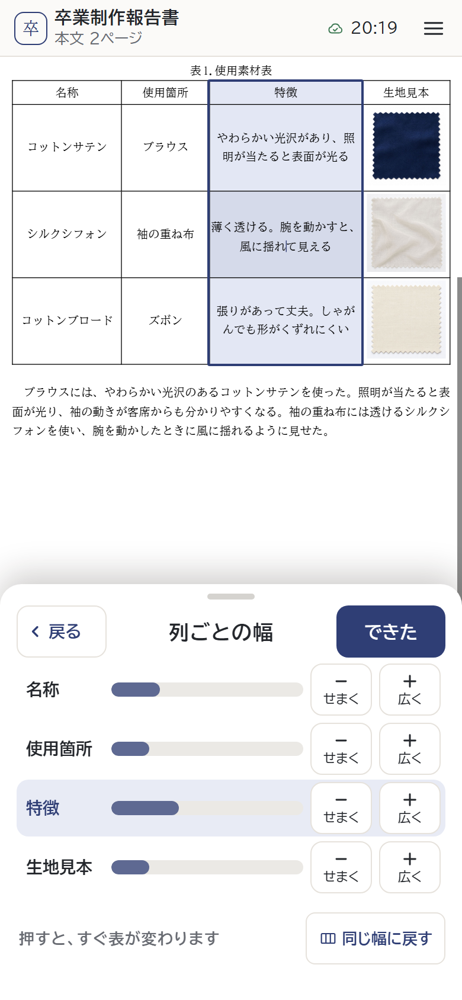
自分で決める：欄が低くなり、表が見える
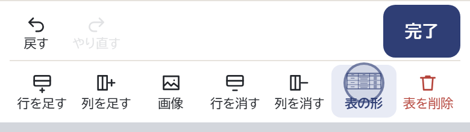
道具の段は7つ。横に動かず、どれも 44px 以上自分で決めるを押すと、欄が列ごとの幅に変わります。書いているマスの列（特徴）に色。せまく・広くで 5% ずつ。
よいところ
設定がボタン1つにまとまり、左の道具が短くなる（画面の低いパソコンでも全部見える）。絵と言葉で、押す前に結果が分かる。押すとすぐ紙面が変わるので、試しながら選べる。パソコンとスマホで同じ並び。
設定がボタン1つにまとまり、左の道具が短くなる（画面の低いパソコンでも全部見える）。絵と言葉で、押す前に結果が分かる。押すとすぐ紙面が変わるので、試しながら選べる。パソコンとスマホで同じ並び。
弱いところ
窓を開く手間が1回増える。窓は左のページの一覧に重なる（拡大・見開きのときは、紙面の左に重なる）。パソコンの窓は幅が狭く、字が2〜3行になる。
窓を開く手間が1回増える。窓は左のページの一覧に重なる（拡大・見開きのときは、紙面の左に重なる）。パソコンの窓は幅が狭く、字が2〜3行になる。
② パソコン：自分で決めるどの案でも同じ・表の縦の線をドラッグ

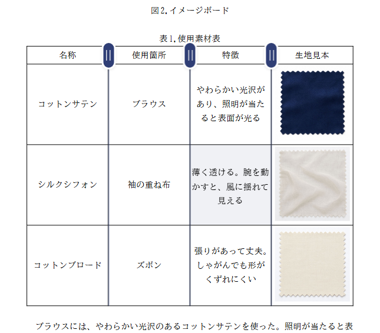
ふだん：見出しの行に、つまみ
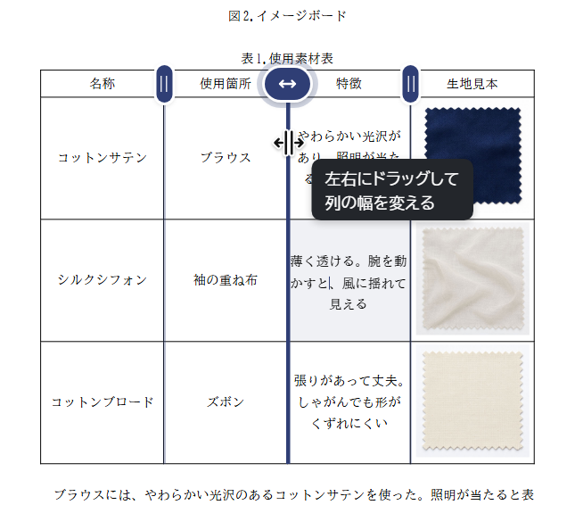
線にマウス：左右にドラッグして列の幅を変える
③ 案B 紙面の上の道具


画面の低いパソコン（列の幅のメニューを開いたところ）

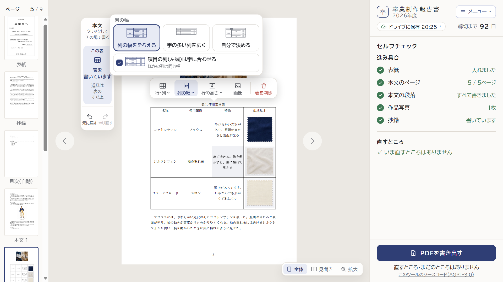
- 1280×720：左の道具 287px。メニューは表の上（36〜193px）に開く

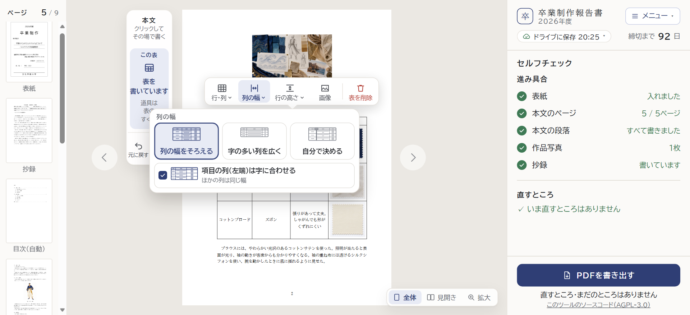
- 1280×586：画面には入るが、上に場所がなく、メニューが表に重なる（202〜359px）
- 1366×634：同じく表に重なる（219〜376px）
スマホ 390×844（仮のキーボード）

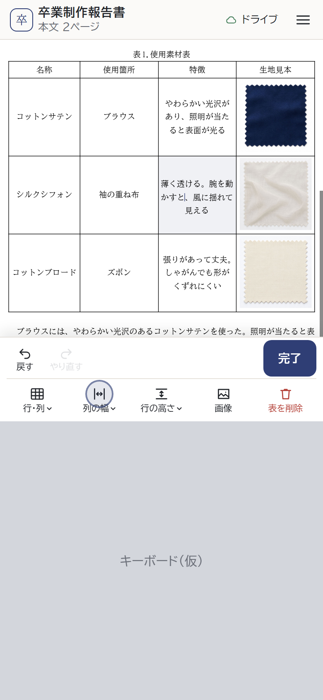
書いているとき：「列の幅」を押す
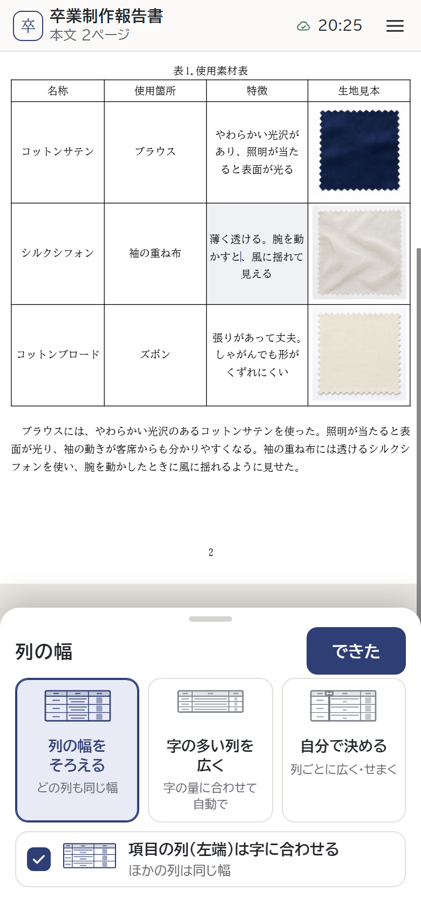
列の幅の欄
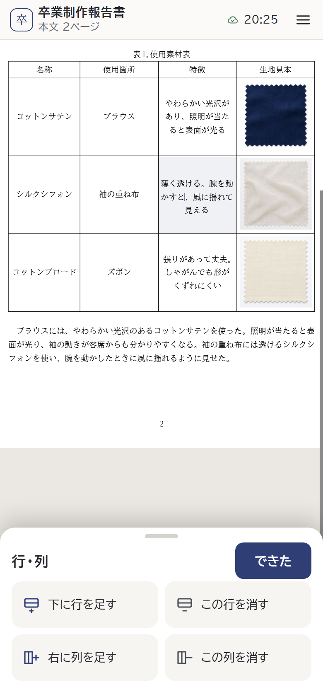
行・列の欄
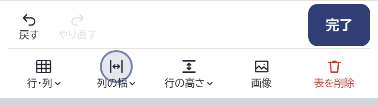
道具の段は5つ。横に動かず、どれも 44px 以上よいところ
道具が表のすぐそばにあり、何のための道具か分かりやすい。左の道具がいちばん短い（287px）。行・列を足す・消すも1か所にまとまる。
道具が表のすぐそばにあり、何のための道具か分かりやすい。左の道具がいちばん短い（287px）。行・列を足す・消すも1か所にまとまる。
弱いところ
帯が、表の上の図やタイトルに重なる。画面の低いパソコンでは、上に場所がなく、メニューが表に重なって表が隠れる。段落や図の道具は左にあるので、表だけ置き場所がちがう。
帯が、表の上の図やタイトルに重なる。画面の低いパソコンでは、上に場所がなく、メニューが表に重なって表が隠れる。段落や図の道具は左にあるので、表だけ置き場所がちがう。
④ 案C 2段がまえ（表の設定…）
パソコン 1366×768

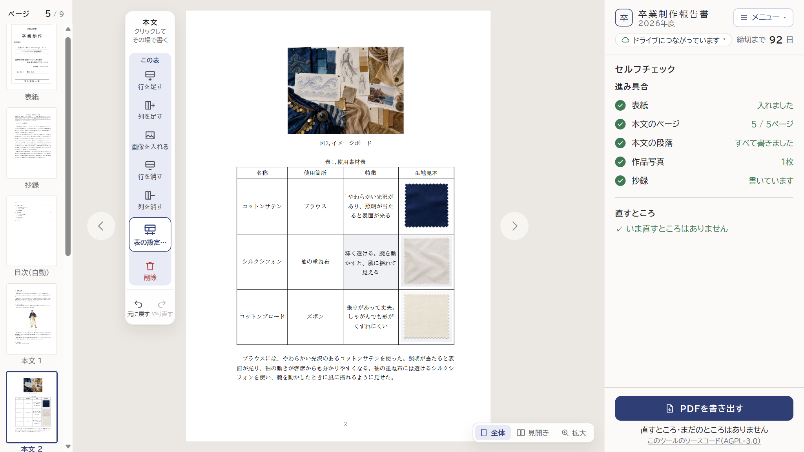
書いているとき：よく使うものと「表の設定…」
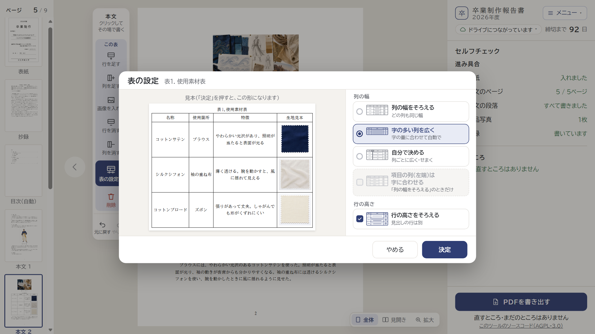
押したところ：見本つきの窓
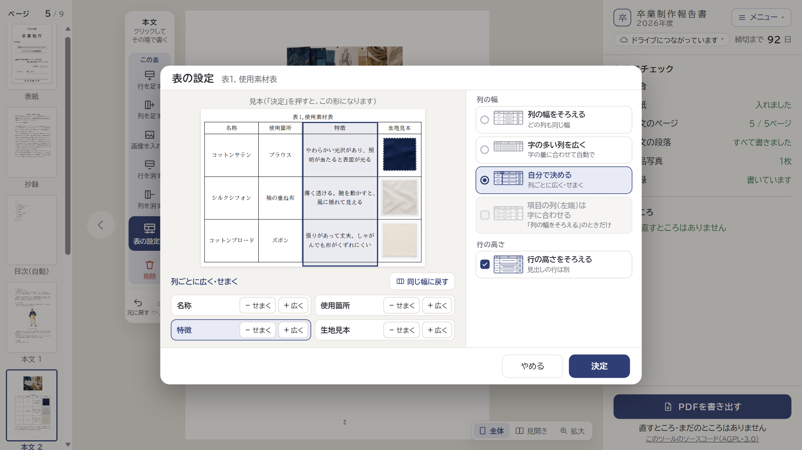
自分で決める：見本の下に、列ごとのボタン


画面の低いパソコン（いちばん長い窓：自分で決める）

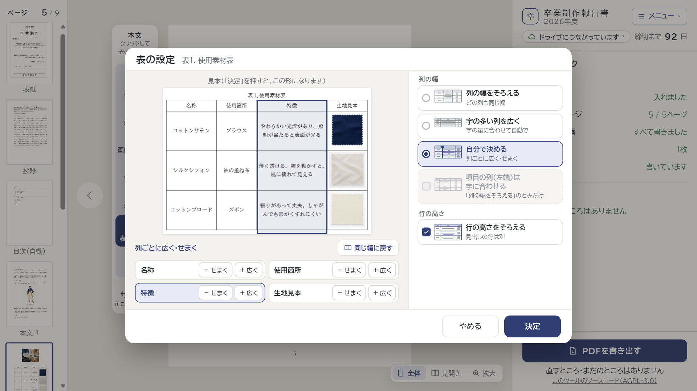
- 1280×720：左の道具 532px（動かさずに全部見える）・窓は 88〜632px

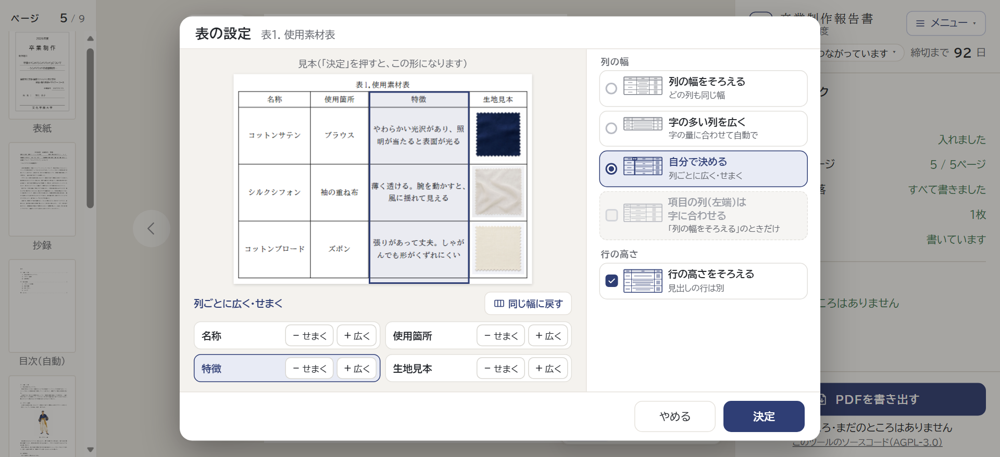
- 1280×586：左の道具の下の端 552px・窓は 21〜565px（見本を小さくして入れる）
- 1366×634：窓は 45〜589px。どちらも入る
スマホ 390×844（仮のキーボード）

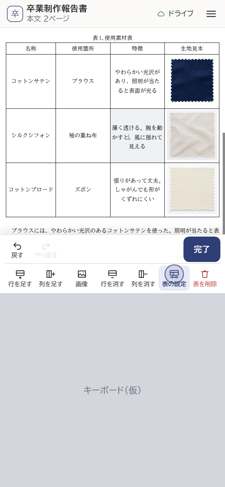
書いているとき：「表の設定」を押す
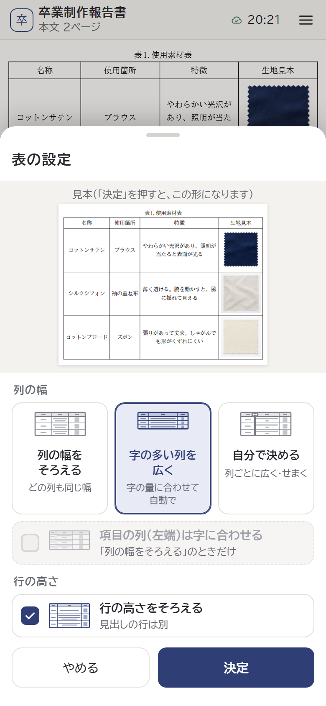
下から出る欄：見本つき
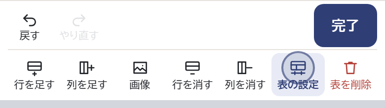
道具の段は7つ。横に動かず、どれも 44px 以上欄の見本は小さいので、字は読めません。形を見比べるためのものです。
よいところ
見本を見て決めてから紙面に入るので、まちがえても安心。自分で決めるも、列の名前を見ながら「せまく」「広く」で決められる（線をつかまなくてよい）。
見本を見て決めてから紙面に入るので、まちがえても安心。自分で決めるも、列の名前を見ながら「せまく」「広く」で決められる（線をつかまなくてよい）。
弱いところ
窓を開き、決定を押すまで紙面は変わらない（手間が2回）。窓が紙面をおおう。見本の表は小さい。左の道具は今より少し短いだけ（532px）。
窓を開き、決定を押すまで紙面は変わらない（手間が2回）。窓が紙面をおおう。見本の表は小さい。左の道具は今より少し短いだけ（532px）。
言葉の表
| 場所 | いま | 案 |
|---|---|---|
| 列の幅 | そろえる／中身に合わせる／自分で決める | 列の幅をそろえる（どの列も同じ幅） 字の多い列を広く（字の量に合わせて自動で） 自分で決める（パソコン：線をドラッグ スマホ：列ごとに広く・せまく） |
| 左端の列 | 左端の列：中身に合わせる／ほかとそろえる | □ 項目の列（左端）は字に合わせる（ほかの列は同じ幅） 使えないとき：「列の幅をそろえる」のときだけ |
| 行の高さ | 行の高さ：そろえる／中身に合わせる | □ 行の高さをそろえる（見出しの行は別） 案B のメニュー：行の高さをそろえる／字の量に合わせる（行ごとにちがう高さ） |
| パソコンの 左の道具 | 列の幅・左端の列・行の高さのボタン 7つ | 案A：表の形を整える 案B：表を書いています 道具は表のすぐ上 案C：表の設定… |
| 窓・メニュー | （スマホの列の幅の窓だけ） | 案A：表の形を整える［×］／押すと、すぐ表が変わります 案B：行・列／列の幅／行の高さ／画像／表を削除 案C：表の設定／見本（「決定」を押すと、この形になります）［やめる］［決定］ |
| 自分で決める （パソコン） | 縦の線を／ドラッグして／幅を変える ［幅をそろえ直す］・左右にドラッグ・20%｜30% | 表の縦の線を左右にドラッグ［同じ幅に戻す］ 左右にドラッグして列の幅を変える ◀ せまくなる／広くなる ▶ 案B の帯：表の縦の線を、左右にドラッグ［同じ幅に戻す］［できた］ 案C：列ごとに広く・せまく 名称［− せまく］［＋ 広く］… |
| 自分で決める （スマホ） | 丸を左右に動かす／この列 35%／幅をそろえ直す | 列ごとの幅［‹ 戻る］［できた］ 名称［− せまく］［＋ 広く］… 押すと、すぐ表が変わります［同じ幅に戻す］ |
| スマホの 道具の段 | 行を足す／列を足す／画像／行を消す／列を消す／列の幅／左端の列／行の高さ／表を削除（横に動く） | 案A：…／列を消す／表の形／表を削除（7つ） 案B：行・列／列の幅／行の高さ／画像／表を削除（5つ） 案C：…／列を消す／表の設定／表を削除（7つ） |
決めていただきたいこと
- 案A・案B・案Cのどれにしますか。（おすすめは案A）
- 言葉は、上の表の「案」でよいですか。（とくに「字の多い列を広く」「項目の列（左端）は字に合わせる」「行の高さをそろえる（見出しの行は別）」）
- 線を動かしている間の札を、数（20%｜30%）から「せまくなる」「広くなる」に変えてよいですか。
- スマホで幅を変えるのは、欄の「せまく」「広く」（案）と、紙面の丸いつまみ（いま。v42 で決めたもの）のどちらにしますか。（両方残すこともできます）